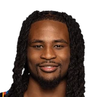

Cason WallaceThunder player
Cason Wallace on building chemistry with Josh Giddey.
“he's a great dude off the court, fun to hang out with. My locker is right next to him, so we've gotten pretty close and yeah, he's playing really confident out there and he's letting that thing fly and it's really fun to play out there with him, just knowing that he's always there and ready to knock down a shot, so I'm looking forward to the season with him.”
On Josh Giddey
· Post Game Media Availability | Preseason | October 12, 2026 | OKC Thunder▶ Watch at 2:12